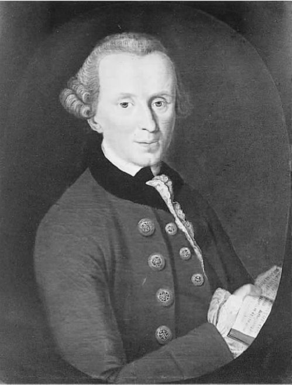
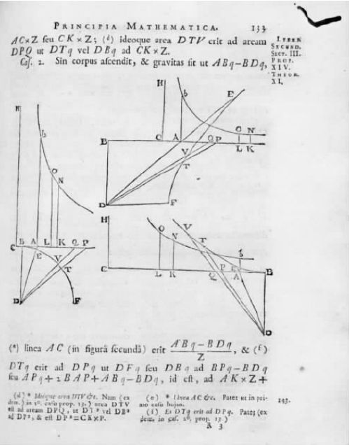

康德对形而上学的基本问题——“综合的先天知识如何可能？”作出的回答包括两个部分。依照康德自己的术语（《纯粹理性批判》第1版，xvi），我把它们叫做“主观”演绎和“客观”演绎。（康德使用的是“演绎”这个术语的法律内涵，就如在对土地所有权的演绎中的内涵一样，指我们对某物拥有权利的一种证明；康德在此指有使用某些概念或“范畴”的权利。）康德在1770年的就职论文中对主观演绎进行了部分地勾勒（“就职论文”，54页及其后），主观演绎主要是一种认识论。它试图说明作判断时会涉及什么：判断某物为真还是为假。主观演绎集中论述思维的本质，尤其是信仰、感知和经验的本质。它的结论作为一般性的“知性”（判断能力）理论的一部分呈现出来。康德反复强调，该理论不能被解释为经验心理学。它也不是，也没有声称是，关于人 的而非其他物种的心智活动的理论。它是关于知性本身的理论，告诉我们知性是什么，如果作判断，知性又必须如何起作用。在所有关于这些问题的哲学讨论中，康德认为我们谈论的“不是经验的起源，而是经验里面包含着什么”（《未来形而上学引论》，63）。他还把这种纯粹的哲学问题比做自那时起逐渐流行起来的“对概念的分析”。康德希望划定知性的界限。如果存在着知性不能把握的事物，那么关于它们的所有断言都是没有意义的。
客观演绎企图肯定地确立先天知识的内容。这里的论证并不是通过对认识能力的分析进行的，而是从对认识之基础的探究进行的。经验的前提假设是什么呢？如果我们要获得怀疑论者所归于我们的那种原原本本的观点，那什么又必须为真呢？如果我们能够识别出这些前提假设，它们就会被确立为先天为真。因为它们的真理性不是来自于我们有这样或那样的经验，而是来自于我们确实 有经验。所以它们不依赖于任何特定的经验来获得证实，仅仅通过推理就能够成立。在每个怀疑论问题可以被提出的领域（在每个可理解的领域），它们都将为真。这就等于说它们具有必然性。我不能设想它们为假，因为我不能设想自己是一个反驳它们的世界的一部分。
康德把这一论证称做“先验演绎”，称由此产生的理论为“先验唯心论”。“先验的”这个词需要一些解释。如果一种论证为了建立经验的先天条件而“超越”了经验探究的“限度”，那么它就是先验的。我们必须把先验论证和经验论证区分开来（《纯粹理性批判》第2版，81）；不同于后者，前者引向“一种更关注我们对客体的认识模式而不是客体本身的知识，只要这种认识 模式是先天可能的 ”（《纯粹理性批判》第2版，25）。“先验的”这个词也被康德用做他意，来指代“先验客体”。这是一些超越经验的客体，即无法由经验研究揭示的客体，它们自身既无法观察也不与可观察的东西有因果关联。这些“先验客体”提出了一个阐释问题，我在第四章会回来谈论这个问题。
现在我要转回对“先验唯心论”的阐释上来。简而言之，这个理论暗示着，建立在主观演绎基础上的知性法则和建立在客观演绎基础上的先天真理是一样的。换句话说，它意味着认识者的能力与被认识对象的本质之间有某种极其特殊的和谐关系。正是由于这种和谐，先天知识才是可能的。
根据这一理论，主导着知性的“思想形式”与实在的先天本质是完全一致的。世界如我们所认识的那样，我们也如其所是地那样认识它。阐释康德思想的所有主要困难，几乎都取决于那两个命题中哪一个被强调。是我们的思想决定世界的先天本质，还是世界决定了我们必须怎样去思考它？我认为答案为“都不是和都是”。但只有到本书的末尾答案才会明了。
自我意识
我已经采纳康德的用法，谈到了“我们的”知性和经验。“我们”是谁？康德用的是第一人称复数，这是一个具有非常独特的特征的用法。正如我说过的那样，他不是在对“像我们这样的动物”进行心理学研究。他也不是在用无法找到真正主体的抽象作者的声音讲话。他无差别地用术语“我们”来表示任何能使用“我”这个词来指代的存在物：任何一个可以把自己识别为经验主体的人。整个康德哲学的出发点都是自我意识这个单一的前提，他的三部《批判》的前两部分别与下列问题相关：“一个有自我意识的存在者必须思考什么？”“他必须做什么？”自我意识是一个深层现象，包括很多层次和方面。并不是每个存在者都能够认识他自己的经验［对他来说，“我思”能够伴随他的所有感知，正如康德表述自己对笛卡尔的关键修正（《纯粹理性批判》第2版，131—132）］。但是，正是这样的存在者才能提出怀疑论问题：“事物真像它们对我呈现的那样（就像我的经验表征它们那样）吗？”因此，该论证所探究的是这一自我意识的假定前提。康德的结论可以总结如下：使怀疑论成为可能的条件也表明怀疑论是虚假的。
先验综合
我将首先讨论主观演绎——关于判断的“主观条件”的理论。我们的知识有两个来源：感性与知性。感性是直觉的能力：它包括被经验论者视为知识之唯一基础的所有感觉状态和限定。知性是概念的能力。概念不得不被应用在判断中，因而这种能力不同于感性，它是能动的。康德认为，不理解这一关键点而按照感觉的模式来解释知性的所有概念，这是经验论者的一个错误。（这样，对休谟而言，概念就仅仅是它所源自于的“印象”的褪色印记。）唯理论也有相应的错误，即把感知视为一种对概念思维的混乱追求。所以，康德把莱布尼茨和洛克之间著名的争论总结为：“莱布尼茨将现象理智化 ，正如洛克……把知性的概念感性化 一样。”然而实际上，这里有两种能力，二者不可相互归结；它们“只有和另一个联合 起来才能客观有效地对事物作出判断”（《纯粹理性批判》第1版，271；第2版，327）。
判断由此要求将感性和知性结合起来。没有概念的大脑就没有能力去思考；同样，有概念武装的大脑若没有可供应用的感觉数据，就没有思考的内容。“没有感知，就没有客体提供给我们；没有知性，就没有对象可供思考。没有内容的思想是空洞的，没有概念的直觉是盲目的。”（《纯粹理性批判》第1版，51；第2版，75）作出判断就要求康德所谓的概念和直觉的“综合”，只有综合起来才会产生真正的经验（和单纯的“直觉”相对）。康德对这一综合的描述让人有些迷惑：有时候，它似乎是经验得以产生的“过程”；又有些时候，它似乎是经验所包含的“结构”。无论在什么情形中，它似乎有两个阶段：“纯粹”综合，在这里直觉组合成一个整体；然后是判断行为，在这里整体通过概念被赋予了形式（《纯粹理性批判》第1版，79；第2版，104）。这种综合并不意味着要成为一个心理事实，它是与“经验”综合相对的“先验”综合。换句话说，它是在（自我意识的）经验中被假定的，不是从中派生的。我并未控制自己的经验，然后让它隶属于综合。因为，“控制”这个行为假定了综合已经发生。设想一下，我试图描述当我坐在桌旁写字的时候事物如何向我显现。我即刻就开始了把感觉意识归入概念（比如那些桌子和写字的概念）的活动。我只能通过描述“事物如何显现”来将我的经验呈现给自己：这就要用到知性的概念。相反，如果没有展示这些概念之应用的经验，我的所有概念都将是不可理解的。
先天概念
经验论假定，全部的概念派生于或者在一定程度上可以归结为保证其应用的感性直觉。没有相对应的感性刺激就不会有概念，也正是根据这样的刺激，概念必须获得意义。康德认为，这种假设是荒谬的。经验论者混淆了经验和感觉。经验能为概念的应用提供根据，因为它已经包含一个概念，与刚才描述的“综合”一致。感觉或者直觉则不包括概念，也不为判断提供根据。在未经心理活动改造之前，所有感觉都没有心智结构，因此也不能为信仰提供理由。如果我们理解经验，那是因为它们自身已经包括了我们假定从它们之中得出的概念。这些概念从何处而来？不是从直觉而来。因此，知性本身必定含有概念的某种全部要素，来限定它的活动形态。
由此可知，莱布尼茨的“天赋观念”基本上是正确的。有些概念通过经验是无法给出的，因为它们是在经验中预设的。它们与对世界的每一次理解（这种理解能够呈现为我的）都相关；没有这些概念就没有经验，而仅仅有直觉，从直觉中没有知识可以派生出来。知性的这些“先天概念”规定了判断的基本“形式”。其他的概念可被看成是对它们的“限定”——也就是说，看成是多多少少掺杂着观察和试验因素的特定情形。
康德把这些基本的概念叫做“范畴”，借自亚里士多德曾经使用过（但没有系统使用）的一个类似术语。范畴是我们思维的形式。其中有一个概念是莱布尼茨体系的源头：实体范畴。实体是能够独立存在的，并且承载着依赖于它的特性。“椅子”这个概念是对一般实体概念的一个特别的、经验性的限定。它只能被已经掌握那个一般概念的人获得，因为只有这样的人能够以一种必要的方式来阐释他的经验。另一个范畴受到了休谟怀疑论的攻击，此即因果范畴。分析性论证大部分都涉及实体和因果性观念，因为康德希望我们理解这两个观念。这并不奇怪。然而，他总共给出了十二个范畴，并且很满意地发现它们和传统形而上学的所有争论都相呼应。
主观演绎
从上面的论述似乎可以得出，如果我们想真正拥有知识，我们的直觉就必须容许对范畴的应用。更直接地讲：在我们看来似乎是，我们面对着实体、原因和其他范畴。所以，我们能够先验地知道，每个可以理解的世界（每个可能包含自我意识的世界）也必然会有受范畴支配的表象。只有当它看来似乎遵守某些“原则”的时候，它才能有那种表象。一个原则规定着一个范畴能应用的条件。所有原则结合起来界定了我们所要求的先天知识的范围。

图10 四十四岁时的康德（贝克作品，约于1768年）
范畴的“主观演绎”确立了什么？答案似乎是这样的：我们必须按照范畴来思考，因此也必须接受制约范畴之应用的那些原则为真。所以通常来说，世界必须以一种让我们能够 接受这些原则的方式呈现给我们。自我意识要求世界必须看起来符合范畴。这个论断包含了康德所称的哲学上的“哥白尼式革命”的本质。以前的哲学家都把自然看做是最根本的，询问我们的认知能力怎样能理解自然。康德把认知能力当做最根本的，然后推演自然的先天界限。这是他回应休谟的第一个重要步骤。休谟曾经主张，我们的知识有着经验的基础。对此人们未觉不妥。但是经验不是休谟所认为的简单概念。经验包括智识的结构，它已经按照空间、时间、物质和因果关系这些概念组织过了。所以，不存在不指向自然世界的经验知识。我们的观点本质上是关于客观世界的观点。
但是，这回答了怀疑论者吗？怀疑论者必然会说，即使康德是正确的，即使世界必须按照这种方式呈现给我们，难道世界就必须是 其所呈现 的那样吗？即使我们被迫认为范畴有适用性，也并不能得出它们确实适用。我们不得不从对我们观点的描述转到对世界的描述上去。所以“思想的主观条件怎样才能具有客观有效性？”（《纯粹理性批判》第1版，89；《纯粹理性批判》第2版，122）这个问题仍然存在。正如康德所称（《纯粹理性批判》第2版，141），任何判断都有一定的客观性。那么很明显，范畴的“客观演绎”是不可少的：这一论证会表明，世界，而不仅仅是我们对世界的经验，与知性的先验原则是一致的。
思想的形式和直觉的形式
在继续探讨客观演绎之前，我们必须回到《纯粹理性批判》的前几部分，在那里，康德笼统地表述了感性的本质。康德相信，通过抽象化过程他已获得了一个范畴表。假设我正描述我现在看到了什么：一支钢笔在写字。“钢笔”这个概念是“人工制品”这个更宽泛概念的特别“限定”，“人工制品”本身又是“物质客体”概念的限定，等等。这一系列抽象的限度是在每个阶段都得到例证的先天概念：实体。越过这个限度，即便我们继续思考，也无法继续抽象了。同样，“书写”是“行动”的限定，而“行动”又是“力量”的限定，如此等等：这里的范畴是原因或者是解释，在这二者之外知性就不能继续。康德通过这些以及类似的思维实验认为，在他列出的十二个范畴中，他已经分离出判断的所有形式，从而给出了客观真理这个概念的说明。因此，我们对于知识客观性的证明涉及到对范畴的“客观有效性”的证明，以及对应用这些范畴时所预设原则的证明。
然而，还有两个观念，尽管它们对科学、对关于这个世界的客观观点非常重要，但仍不在康德的范畴表里。这就是空间和时间。康德不把它们描述为概念，而是描述为直觉形式。第一部《批判》的开篇部分，即“先验感性论”（Transcendental Aesthetic）中论述了空间和时间。这里Aesthetic这个词是从希腊语中描述“感觉”的词语中派生出来的，表示这个部分的主题是感性能力，是独立于知性来考察的。康德认为空间和时间远不是能被应用于直觉的概念，而是直觉的基本形式 ，意味着每一感觉都必定带有时间组织有时又是空间组织的印记。
时间是“内感觉”的形式，即所有心智状态的形式，不论它们是否指涉客观现实。没有哪个心理状态不是在时间中的，并且时间是通过我们经验中的这一组织对我们来讲成为实在的。空间是“外感觉”的形式，即“直觉”的形式。这里的“直觉”被我们指向独立的世界，从而被我们看成是客观事物的“表象”。一切事物，除非被感知为“外在的”，从而和我自己在空间上相关联，就不能独立于我而呈现在我面前。与时间一样，空间形成我的感性组织的一部分。我的感官印象具有空间形式，这已在“视界”的现象中得到了证实。
那么为什么否认空间和时间是先天概念呢？它们是先天的，但不可能是概念，因为概念是普遍的，涵盖了大量的实例。康德认为，必然只有一个空间也只有一个时间。所有的空间形成了一个单一空间的各个部分，所有的时间也形成了一个单一时间的各个部分。康德有时也通过以下说法来表达这一点：空间和时间不是概念而是“先天直觉”。
在康德哲学中，对秩序的强烈追求使他试图通过他的体系中每个独特的部分，来解决尽可能多的哲学问题。康德把空间和时间与知性这一范畴区别对待，这样做的动机就是为了提出一种解释：存在着两种综合的先天真理——数学和形而上学。对于其中每一真理的解释似乎都应该是不同的，因为数学对所有的思考者而言是不证自明的，而形而上学在本质上就有争议，是人们无休止争论的一个问题；“远远不像二乘以二等于四这个命题那么明确”（《纯粹理性批判》第1版，733；《纯粹理性批判》第2版，761）。数学确实具备直觉本身全部的直接性和明确性，形而上学的原理却只能从思维中派生出来，必然是有争议的。康德把数学解释为一门先天的直觉科学，并认为他能够说明为何如此。在数学中我们面对的是“先天直觉”；这为我们的思维自动提供了内容，没有内容，思维就无法抽象地运用范畴。数学的结论是“先天地、直接地”得出的（《纯粹理性批判》第1版，732；《纯粹理性批判》第2版，760），形而上学的结论必须通过艰苦的论证才能得出。
不论我们是否接受康德的解释，他的哲学一个独特的特点无疑就在于把数学真理看成先天综合真理。同时，他又不赞成柏拉图的解释，即这种先天综合地位是从数学对象（抽象的、不可改变的数字和形式）独特的本质中得出的。康德也不同意休谟和莱布尼茨的观点，后二者认为数学是分析的。所以问题就在于，数学怎么可能是先天综合的，同时又不提供神秘的和无法观察的领域的知识？康德在就职论文中认为，几何学的先天性来自于数学思考的主体而不是客体（“就职论文”，70—72）。正是这一点促使他形成了以下成熟观点：只有空间进入了感知的本质，才存在空间的先天知识。这样就有了作为直觉“形式”的空间的理论。
因此，客观知识有双重的起源：感性和知性。正如前者必须“符合”后者一样，后者也必须“符合”前者；否则两者的先验综合就是不可能的。说知性必须“符合”感性是什么意思呢？时间是所有感性的普遍形式，因此这个主张就等同于：范畴必须在时间中首先得到应用，并且相应地被“决定”，或者说限制。这样，实体概念用以作为其首要例证的东西，就既不可能是莱布尼茨的“单子”，也不可能是柏拉图的超领域抽象客体，而是暂时性的普通事物，这些事物在时间中持续，易于变化。如果这些事物具有客观性，那么按照空间是外感觉的形式这个理论，它们必定也是空间性的。所以，证明实体概念的“客观有效性”并不是去证明这个世界是由单子组成的。确切地说，世界是由普通的空间——时间客体组成的。关于客观性的哲学论证所要确立的不是抽象的、无视角世界的存在，而是要确立由科学和日常感知构成的常识世界：这个世界正是休谟怀疑论和莱布尼茨的形而上学所质疑的世界。因此，对于康德来说，在他对客观性的论证中说明下面这一点很重要：他所证明了的那些信念与牛顿科学为所有可感知物制定的原理完全一致。
统觉的先验统一
范畴的“客观”演绎开始于自我意识这个前提，按独特的康德用语来说，自我意识就是“统觉的先验统一”。理解这个短语很重要，它包孕着康德哲学的大部分思想。“统觉”是从莱布尼茨的形而上学中借鉴而来的一个术语，指主体能够说“这是我的”的任何经验。换句话说，“统觉”意味着“自觉的经验”。统觉的统一性就在于“‘我思’，它能够伴随我所有的知觉”（《纯粹理性批判》第2版，131—132），这里又借用了康德转述的笛卡尔的说法。它由我的直接意识组成，即意识到同时发生的经验是属于我的。我直接知道，在两者都属于规定着我的观点的那个意识的统一体这层意义上讲，这个思想和这个感知都同等地属于我。这里，怀疑是不可能的：我绝对不会处于狄更斯在《艰难时世》中赋予格雷因太太临终之时的那种状态，即知道在房间某个地方有疼痛，却不知道疼痛是我的。这种对统一性的理解就叫做“先验的”，因为我永远无法从经验中获得它。我不能声称，因为这个疼痛有这样的特质，这个想法有那样的特质，它们就必定属于同一个单一的意识。如果那样做，我就犯了一个错误；我就会荒唐地把不属于我而属于别人的疼痛、思维或者感知都归到自己身上。所以，以我的观点来理解的统一性不是从经验得出的结论，而是经验的先决条件。它的基础超越了经验可以确立的任何事物。正如康德有时所称的，意识的统一“先于”直觉的所有材料（《纯粹理性批判》第1版，107）。
统觉的先验统一为我们的观点提供了最低限度的描述。我至少可以知道一件事：存在着意识的统一。怀疑这一点就等于不再有自我意识，也就等于不再从怀疑中寻找意义。我们的任务就在于说明，这个观点只有在一个客观的世界中才是可能的。
先验演绎
客观演绎跟它的前提一样有着“先验性”特征。它要表明的是，它的结论的真理性不是从经验中演绎出来的，而是在经验的存在 中预设的。统觉的先验统一要想可能，条件是主体居于范畴所描述的这样一种世界：这是一个客观世界，其中的事物跟它们所看起来的可能不一样。这个论点简而言之就是：统觉的统一性描述了主体性的条件，在这种条件下，每个事物都是其所似并似其所是。但是，如果一个人没有客观真理的知识，他就不可能有主体性的观点。所以他必须属于一个事物的世界，这些事物可能不是它们看起来的样子，并且独立于他自己的视角而存在。
接近这个主旨的论点很难找到，并且重要的是，康德很不满意“先验演绎”，所以在第一部《批判》的第二版中将其推翻重写，把重点从上面给出的主观结论转移到现在要讨论的客观演绎上来。即使这样，结果仍很含糊。因此又加入一段，题为“驳斥唯心论”，以使对客观性的强调更具说服力。这段驳斥的要点是：通过说明“即使是在笛卡尔看来无可怀疑的内在经验（Erfahrung），也只有在外部经验（对于客观世界的经验）的假定下才是可能的”（《纯粹理性批判》第2版，275），来表明“我们对外部事物不止有想象 ，还有经验”。这个论点的风格比它的基本内容更加明显。看来至少包含三个思想：
（1）识别经验 。经验论者通常假定，仅仅通过观察就可以知道经验。但是，事实并非如此。我不观察我的经验，只观察它的对象。因此，任何经验的知识都必然涉及它的对象的知识。但是，只有当我把这个对象识别为连续的，我才能拥有关于它的知识。任何对象，只有同时具有未被观察的时候也同样存在的能力，它才具备时间上的连续性。它的存在因此是不依赖于我的感知的。
（2）借助时间的识别 。只有把经验放置在时间中，我才能够把经验识别为我的。因此我必须把经验归于一个主体，这个主体在时间中存在，通过时间而持续。我的统一性要求我的连续性。然而要持续就要有实体性，事物只有同时处于因果关系中才可能是实体性的。只有当我的过去可以解释我的未来时，我才能持续。否则，真实的持续与瞬间自我的无限序列就没有区别了。如果我确实能意识到我的经验，我由此就可以得出结论：我属于一个实体和原因这类范畴能被正确应用的世界，因为这些范畴被正确地应用于我。因此，自我意识的一个条件就是存在着我的经验暗示给我的客观秩序。
（3）时间中的排序 。我有关于当下经验的特殊知识。要了解我的经验就要把它作为当下经验来了解。这一点只有当我在经验中区分了此时和彼刻时才有可能。所以在感知中固有着“时间秩序”，我要了解我自己，就必须知道这个秩序。但是只有当我能够参考独立的客体以及支配这些客体的规律时，我才能知道该秩序。只有到了那时，我才能把时间描述为经验发生的一个维度，而不是一系列不相关的瞬间。时间的真实性在经验中被预设，这种真实性又预设了一个客观序列的真实性。只有通过参照那个序列，参照建构它的持续存在的客体，我才能识别我自己的感知。
这些思想在康德著作中都不如我的概述表达得那么清晰。公平地讲，先验演绎从未能提供一个令人满意的论证。它的所有说法都涉及从意识统一通过时间向主体同一的过渡。休谟指出，我们对客观知识的一切主张都涉及从统一到同一的过渡；他还认为这一点永远不会被证实为合理。康德没有发现可以用来回答休谟的术语。不过，他的事业对后来很多的哲学家产生了吸引力，那些与先验演绎中勾勒出来的相类似的论证在近些年又重新复兴，尤其值得关注的是被路德维希·维特根斯坦（1889—1951）复兴。维特根斯坦在《哲学研究》中提出著名的“私人语言”论证，主张不存在不参照公共世界的关于经验的知识。我能直接地、不受影响地认识我自己的经验，但这只是因为我把从公共用法中获得意义的概念应用到我的经验身上。公共用法描述了一个实在，除我之外，其他人也能观察到这个实在。我的语言的公共性保证了它的指称客观性。对很多人来说，维特根斯坦的论证似乎很有说服力，它同先验演绎有着一样的前提和结论。然而，它不依赖于时间的形而上学学说，而是依赖于指称和意义学说。它没有直接声称主体依赖于客体，而是表明，主体依赖于主体共同体 ，从而也就依赖于确立了共同参照系、可被公开观察到的世界。
如果这是正确的，先验演绎就具有重大意义。它确立了我的世界的客观性，同时又并没有采取我之外的视角。在《沉思集》里，笛卡尔在证明外部世界的过程中，试图通过确立一个无所不知的上帝的存在走到主体视角之外：世界于是就被证实为上帝（不从某个具体视角看待的）意识的对象。康德“先验”方法的精髓在于它的自我中心论。我能够问的所有问题都必然根据我自己的观点来问；所以它们必然带有我的视角，即“可能经验”的视角的印记。这些问题的答案不是要在企图上升到理性存在者的过程中去寻找，理性存在者不靠经验就能认识，而是要在我自己的经验本身中，去寻找对于怀疑论质疑的回应。先验方法在视角的先决条件中去发现每个哲学问题（问题必须是根据该视角提出的）的答案。
原则
康德认为每个范畴都与一个原则相对应，这个原则的真实性是在运用中被预设的。原则是范畴的“客观应用规则”（《纯粹理性批判》第1版，161；《纯粹理性批判》第2版，200）。这些原则是先天真理，包含两个方面。它们指出，如果我们真要去思考的话我们必须怎样思考；在客观方面，它们指出，如果世界是可理解的那么世界必须是怎样的。通过这些原则，范畴“为表象，从而也为本质先天规定了法则”（《纯粹理性批判》第2版，163）。也就是说，它们规定着涉及日常世界和科学观察的先天综合真理。它们不是关于“物自体”的先天真理。对于不参照我们的感知来进行的世界，它们不提供关于这个世界的知识。先天综合知识仅仅是针对“可以成为可能经验之对象的事物”（《纯粹理性批判》第2版，148）。在这个领域，原则陈述了客观和必然的真理，因为范畴“必然地并且先天地与经验的对象相关，其原因是只有通过范畴，经验的对象才能被思考”（《纯粹理性批判》第1版，110）。为“可能经验的对象”所作的限制对康德哲学尤为重要，他反复强调“在可能经验的领域外不存在先天综合原则”（《纯粹理性批判》第1版，248；《纯粹理性批判》第2版，305）。我们必须常常牢记的是：康德希望承认先天知识，但也希望否认莱布尼茨非观察形而上学的可能性。
我有意集中讨论实体和原因这两个范畴。康德把这些与第三个范畴，即共存性或者互相作用相联系。这些概念曾是休谟怀疑论攻击的主要对象。它们也是莱布尼茨形而上学的关键所在，实体这个概念是他分析的起点；“充足理由律”——康德把它与因果关系相联系（《纯粹理性批判》第1版，200—201；《纯粹理性批判》第2版，246）——是支配他的论证的原则。康德对这些概念的探讨引起了极大而持久的兴趣。他把它们置于客观性问题的核心位置，并在分析过程中表达了他认为什么是自然科学的形而上学基础。他在“经验的类比”这一节中导出了相关的原则；就是在这里，康德给出了关于客观知识本质的一些具有革命性的提示。

图11 牛顿的《原理》：关于运动的数学
康德将所有哲学思想划分为四要素和三要素，这让人有些困惑。但是，在论及实体和因果关系的时候，有一个特别的原因可以解释，康德为什么坚持认为应该有第三个基本的概念和它们相关；也就是说，康德希望他的研究结果与牛顿三大定律相呼应。科学的解释依赖于方法原则：既然在科学探究中已被预设，这些原则就不能再通过科学探究来证明。康德相信，这样的原则会被反映在基本的科学定律中；为这些原则得到承认提供基础，这是形而上学的任务之一。
康德时代的物理学似乎先天地假设存在着普遍的因果关系，也存在着相互作用。当时的物理学假定，必须解释的是物质经历的变化而不是物质的存在；它还假定守恒定律是必要的，根据这一定律，在所有的变化中某个基本的量始终保持不变。康德认为，正是这些假设引导牛顿形成了他的运动定律。因此，在导出他的原则的过程中，康德便试图确立“作为知性定律的普遍自然定律的有效性”（《未来形而上学引论》，74），并且进一步声称，新天文学的所有基本定律经过反思都可被视做建立在先天有效的原理之上（《未来形而上学引论》，83）。
支持牛顿力学的同时又抨击休谟对因果关系的怀疑，这两者混合在一起。康德试图表明因果关系是必然的，不仅是在客体必然处于因果关系中（凡是事件都有原因）这层意义上，而且在它们自身就是一种必然联系这层意义上。
“经验的类比”这一节包含了太多论点，这里无法详细解释。与“分析论”的其他重要段落一样，它们在第二版中都被大幅度重写，对“原理”的实际表述也作了重大调整。但是有两个论点，因为它们后来的重要性，应该被特别提出来。首先，康德认为，对变化的所有解释都要求设定一种不变的实体，用来证明科学中“守恒定律”这一基本定律的有效性。继笛卡尔之后，他的论点为研究科学方法的本质提供了最重要的见解，并且沿着“科学统一性”的现代观念迈出了清晰的一步。根据这个观念的一种看法，在解释每个变化的时候，都涉及一个单一的守恒定律，因此也涉及一种单一的物质（比如能量），其转化定律支配着整个自然界。
其次，康德在第二类比中维护了一个重要的形而上学观点：“原因与结果的关系是使我们的经验性判断具有客观有效性的条件。”（《纯粹理性批判》第1版，202；《纯粹理性批判》第2版，247）只是因为我们在现实世界能够找到因果联系，所以能假定世界是客观的。这是客观性和持续性之间的联系带来的结果：因为事物能持续，所以我能区分它的表象和实在。但是，只有当存在一根因果关系之线把事物的各个时间部分连接起来，事物才能持续。这张桌子现在之所以如其所是，是因为 它过去如其所是。客观性对于因果关系的依赖，与因果关系对实体的依赖相类似：我们的因果律能得到运用，只有以事物能持续这个假设为前提。“因果性导向行动这个概念，行动的概念又导向力的概念，力的概念又导向实体的概念。”（《纯粹理性批判》第1版，204）这一点，我们能简单总结如下：我们要探究事物实际上如何，只有通过找出它们看起来如何的原因；我们要发现原因，只有通过假定存在一个包含持续事物的领域。
因此，关于一个独立客体的思想涉及到关于因果性的思想，而在康德看来，因果性是一种必然性。因此，了解关于世界的真理即是了解必然性：了解什么是必然的，原本可能是什么。这个观点与经验论者的观点根本冲突，经验论者认为，自然中没有必然性；也与那些现代理论相悖，现代理论认为，我们对现实形成基本看法时所牵涉的思维过程，比理解必然性和可能性时所牵涉的要简单。
所有这些引人注目的观点都产生于一种企图，即企图对物理世界的客观性给出一种（可被称为）充分“丰富”的表述。任何认真对待康德观点的哲学家都会看到，把客观秩序概念“降解”为单纯的经验概括是何等困难。所以，他会承认，不仅康德所批判的怀疑论令人难以置信，作为怀疑论开端的经验主义认识论亦是如此。
结论
原理具有先天的有效性，但这只是就“可能经验的客体”而言。经验论者否认这样的先天原理的可能性，这是错误的；但是他们假定我们对于世界的观点在一定程度上是知识的组成部分，这却是正确的。我们能先天地认识世界的前提是，世界有可能向我们的观点呈现一个表象。想要超越这种观点，不利用任何可能的感知去认识“存在于自身”的世界，这是徒劳。因此，所有想要证明莱布尼茨充足理由律的企图“都已落空，这是相关人士所公认的”（《纯粹理性批判》第1版，783；《纯粹理性批判》第2版，811）。但是康德认为，原理的“先验”等价物是可以证明的：充足理由律因此成为了因果律，即经验世界的任何事件都受因果关系的制约。这是一条先天真理，但只适用于“表象世界”，因此也只适用于时间中的事件。康德对这一点很自信，但是莱布尼茨哲学的许多追随者认为，他们已经为充足理由律提供了证明——鲍姆嘉通就是其中的一位。另外鲍姆嘉通有个学生名叫埃伯哈德，他试图证明批判哲学不过是对莱布尼茨哲学体系的重新表述，充足理由律不仅对康德哲学来说是必要的，而且也是可以先天论证的。这是为数不多康德觉得有必要作出回应的、对《批判》的几个批评之一（见出版于1790年的《论发现》中）。康德表明，“不与感知直觉相关联”（《康德-埃伯哈德争论》，133）是无法证明充足理由律的。他强调，纯粹理性在概念范围之外是无法对任何关于世界的实质性真理有所帮助的。他还认为，充足理由律只有通过他的“先验”方法才能确立，这种方法把认识对象与认知者的能力关联起来，只先天地证明那些决定经验条件的定律。
莱布尼茨的追随者们徒劳地试图只在“纯粹理性”基础上建立知识，这是“先验辩证法”的论题。沿着康德批判哲学的脉络，我们能发现他所说的“先验唯心论”到底是指什么，为什么他认为“先验唯心论”能在经验主义与理性主义之间找到中间道路。